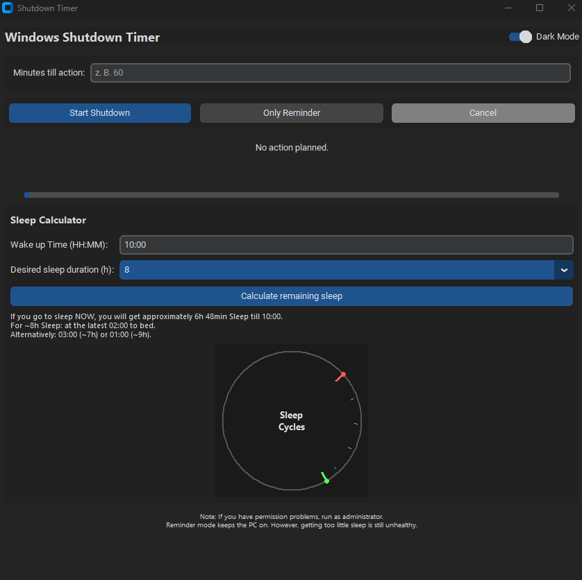

Shutdown timer that feels native
Pick minutes, hit start, done. A live countdown and progress bar show exactly what’s happening.
Windows can schedule a shutdown, but it hides the feature behind command-line flags. This app gives you a clean UI to set a timer, cancel it anytime, or use reminder mode instead.
Pick minutes, hit start, done. A live countdown and progress bar show exactly what’s happening.
Want a gentle nudge instead? Set a reminder and get a notification when it’s time to call it a day.

Set your wake-up time and see how much sleep you’ll get if you go to bed now, plus simple sleep cycle markers.
Small utility, big quality-of-life upgrade. Built for Windows 10/11.
Set shutdown or reminder timers in minutes with a clean, distraction-free UI.
Stop a scheduled shutdown instantly. No guessing, no digging through Windows settings.
Clear countdown display plus a progress bar, so you always know what’s left.
Helps prevent automatic standby while the timer is running (manual sleep still works).
No installer drama, no accounts, no ads. Just a tiny tool that does its job.
No ads, no accounts, no background services. Just start it, set a timer, and forget about it.
Note: If you manually put your PC to sleep, the timer won’t continue. Save your work before scheduling a shutdown.
Windows Shutdown Timer is delivered instantly after purchase. If it saves your PC (or your sleep) even once, it’s worth it.